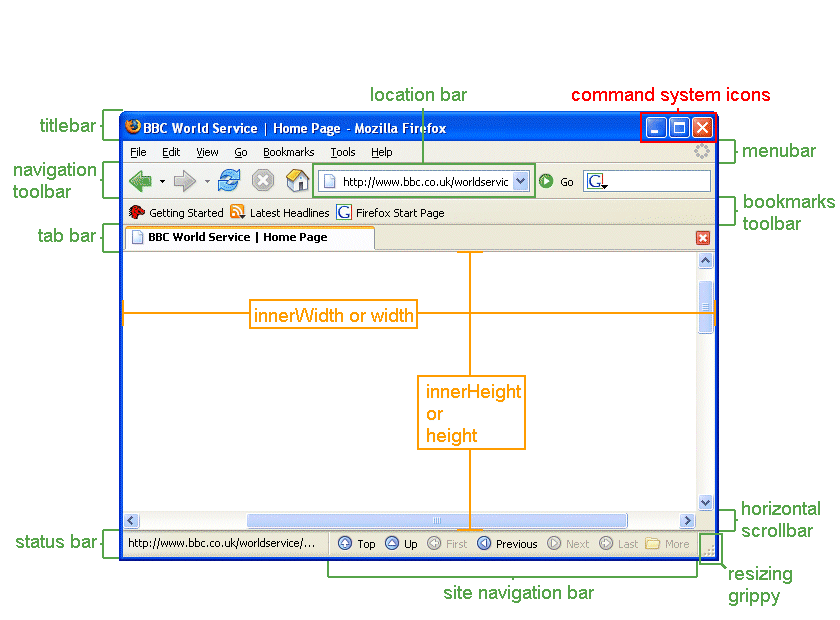
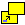
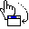
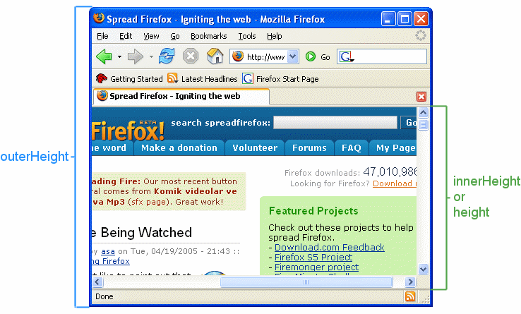

Loads a resource into either a new browsing context (such as a window) or one that already exists, depending on the specified parameters.
Syntax
var windowObjectReference = window.open(strUrl, strWindowName, [strWindowFeatures]);Return value and parameters
windowObjectReference- A reference to the newly created window. If the call failed, it will be
null. The reference can be used to access properties and methods of the new window provided it complies with Same origin policy security requirements. strUrl- The URL to be loaded in the newly opened window.
strUrlcan be an HTML document on the web, image file or any resource supported by the browser. strWindowName- A string name for the new window. The name can be used as the target of links and forms using the target attribute of an
<a>or<form>element. The name should not contain any whitespace characters. Note thatstrWindowNamedoes not specify the title of the new window. strWindowFeatures- An optional parameter listing the features (size, position, scrollbars, etc.) of the new window as a string. The string must not contain any whitespace, and each feature name and its value must be separated by a comma. See Position and size features below for details.
Description
The open() method creates a new secondary browser window, similar to choosing New Window from the File menu. The strUrl parameter specifies the URL to be fetched and loaded in the new window. If strUrl is an empty string, then a new blank, empty window (URL about:blank) is created with the default toolbars of the main window.
Note that remote URLs won't load immediately. When window.open() returns, the window always contains about:blank. The actual fetching of the URL is deferred and starts after the current script block finishes executing. The window creation and the loading of the referenced resource are done asynchronously.
Examples
var windowObjectReference;
var strWindowFeatures = "menubar=yes,location=yes,resizable=yes,scrollbars=yes,status=yes";
function openRequestedPopup() {
windowObjectReference = window.open("http://www.cnn.com/", "CNN_WindowName", strWindowFeatures);
}
var windowObjectReference;
function openRequestedPopup() {
windowObjectReference = window.open(
"http://www.domainname.ext/path/ImageFile.png",
"DescriptiveWindowName",
"resizable,scrollbars,status"
);
}
If a window with the name strWindowName already exists, then strUrl is loaded into the existing window. In this case the return value of the method is the existing window and strWindowFeatures is ignored. Providing an empty string for strUrl is a way to get a reference to an open window by its name without changing the window's location. To open a new window on every call of window.open(), use the special value _blank for strWindowName.
strWindowFeatures is an optional string containing a comma-separated list of requested features of the new window. After a window is opened, JavaScript can't be used to change the features. If strWindowName does not specify an existing window and the strWindowFeatures parameter is not provided (or if the strWindowFeatures parameter is an empty string), then the new secondary window will render the default toolbars of the main window.
If the strWindowFeatures parameter is used and no size features are defined, then the new window dimensions will be the same as the dimensions of the most recently rendered window.
If the strWindowFeatures parameter is used and if no position features are defined, then the left and top coordinates of the new window dimension will be 22 pixels from where the most recently rendered window was. An offset is universally implemented by browser manufacturers (it is 29 pixels in MSIE 6 SP2 with the default theme) and its purpose is to help users to notice new windows opening. If the most recently used window was maximized, then there is no offset: the new window will be maximized as well.
If the strWindowFeatures parameter is used, the features that are not listed will be disabled or removed (except titlebar and close which are by default yes).
Tip: If using the strWindowFeatures parameter, only list the features to be enabled or rendered; the others (except titlebar and close) will be disabled or removed.
Note that in some browsers, users can override the strWindowFeatures settings and enable (or prevent the disabling of) features.

Position and size features
Note on position and dimension error correction
- left
- Specifies the distance the new window is placed from the left side of the work area for applications of the user's operating system to the leftmost border (resizing handle) of the browser window. The new window can not be initially positioned offscreen.
- Supported in: , , , , ,
- top
- Specifies the distance the new window is placed from the top side of the work area for applications of the user's operating system to the topmost border (resizing handle) of the browser window. The new window can not be initially positioned offscreen.
- Supported in: , , , , ,
- height
- Specifies the height of the content area, viewing area of the new secondary window in pixels. The height value includes the height of the horizontal scrollbar if present. The minimum required value is 100.
- Note on outerHeight versus height (or innerHeight)
- Supported in: , , , , ,
- width
- Specifies the width of the content area, viewing area of the new secondary window in pixels. The width value includes the width of the vertical scrollbar if present. The width value does not include the sidebar if it is expanded. The minimum required value is 100.
- Supported in: , , , , ,
- screenX
- Deprecated. Same as left but only supported by Netscape and Mozilla-based browsers.
- Supported in: , , ,
- screenY
- Deprecated. Same as top but only supported by Netscape and Mozilla-based browsers.
- Supported in: , , ,
- centerscreen
- Centers the window in relation to its parent's size and position. Requires chrome=yes.
- outerHeight
- Specifies the height of the whole browser window in pixels. This outerHeight value includes any/all present toolbar, window horizontal scrollbar (if present) and top and bottom window resizing borders. Minimal required value is 100.
- Note: since titlebar is always rendered, then requesting outerHeight=100 will make the innerHeight of the browser window under the minimal 100 pixels.
- Note on outerHeight versus height (or innerHeight)
- Supported in: , , ,
- outerWidth
- Specifies the width of the whole browser window in pixels. This outerWidth value includes the window vertical scrollbar (if present) and left and right window resizing borders.
- Supported in: , , ,
- innerHeight
- Same as height but only supported by Netscape and Mozilla-based browsers. Specifies the height of the content area, viewing area of the new secondary window in pixels. The innerHeight value includes the height of the horizontal scrollbar if present. Minimal required value is 100.
- Note on outerHeight versus height (or innerHeight)
- Supported in: , , ,
- innerWidth
- Same as width but only supported by Netscape and Mozilla-based browsers. Specifies the width of the content area, viewing area of the new secondary window in pixels. The innerWidth value includes the width of the vertical scrollbar if present. The innerWidth value does not include the sidebar if it is expanded. Minimal required value is 100.
- Supported in: , , ,
Toolbar and chrome features
- NOTE: All features can be set to yes, 1 or just be present to be "on", set to no or 0 or in most cases just not present to be "off"
- example "status=yes", "status=1" and "status" have identical results
- menubar
- If this feature is on, then the new secondary window renders the menubar.
- Mozilla and Firefox users can force new windows to always render the menubar by setting
dom.disable_window_open_feature.menubarto true in about:config or in their user.js file. - Supported in: , , , ,
- toolbar
- If this feature is on, then the new secondary window renders the Navigation Toolbar (Back, Forward, Reload, Stop buttons). In addition to the Navigation Toolbar, Mozilla-based browsers will render the Tab Bar if it is visible, present in the parent window. (If this feature is set to no all toolbars in the window will be invisible, for example extension toolbars).
- Mozilla and Firefox users can force new windows to always render the Navigation Toolbar by setting
dom.disable_window_open_feature.toolbarto true in about:config or in their user.js file. - Supported in: , , , ,
- location
- If this feature is on, then the new secondary window renders the Location bar in Mozilla-based browsers. MSIE 5+ and Opera 7.x renders the Address Bar.
- Mozilla and Firefox users can force new windows to always render the location bar by setting
dom.disable_window_open_feature.locationto true in about:config or in their user.js file.In Firefox 3,
dom.disable_window_open_feature.locationnow defaults to true, forcing the presence of the Location Bar much like in IE7. See bug 337344 for more information. - Supported in: , , , , ,
- personalbar
- If this feature is on, then the new secondary window renders the Personal Toolbar in Netscape 6.x, Netscape 7.x and Mozilla browser. It renders the Bookmarks Toolbar in Firefox. In addition to the Personal Toolbar, Mozilla browser will render the Site Navigation Bar if such toolbar is visible, present in the parent window.
- Mozilla and Firefox users can force new windows to always render the Personal Toolbar/Bookmarks toolbar by setting
dom.disable_window_open_feature.personalbarto true in about:config or in their user.js file. - Supported in: , , ,
- directories Obsolete since Gecko 2
- Obsolete synonym of personalbar. In IE, it rendered the Links bar. Supported in Gecko up to 1.9.2 and in IE up to 6.
- status
- If this feature is on, then the new secondary window has a status bar. Users can force the rendering of status bar in all Mozilla-based browsers, in MSIE 6 SP2 (Note on status bar in XP SP2) and in Opera 6+. The default preference setting in recent Mozilla-based browser releases and in Firefox 1.0 is to force the presence of the status bar.
- Note on status bar
- Supported in: , , , ,
Window functionality features
- attention Non-standard
- If this feature is specified, the window is able to open even if another application is already in the foreground. This feature is for Firefox OS applications only, and is currently restricted to certified applications. See "Certified app permissions" in undefined for more information.
- Supported in:
- dependent
- If on, the new window is said to be dependent of its parent window. A dependent window closes when its parent window closes. A dependent window is minimized on the Windows task bar only when its parent window is minimized. On Windows platforms, a dependent window does not show on the task bar. A dependent window also stays in front of the parent window.
- Dependent windows are not implemented on MacOS X, this option will be ignored.
- The dependent feature is currently under revision to be removed (bug 214867)
- In MSIE 6, the nearest equivalent to this feature is the
showModelessDialog()method. - Supported in: , , ,
- dialog
 The
The dialogfeature removes all icons (restore, minimize, maximize) from the window's titlebar, leaving only the close button. Mozilla 1.2+ and Netscape 7.1 will render the other menu system commands (in FF 1.0 and in NS 7.0x, the command system menu is not identified with the Firefox/NS 7.0x icon on the left end of the titlebar: that's probably a bug. You can access the command system menu with a right-click on the titlebar). Dialog windows are windows which have no minimize system command icon and no maximize/restore down system command icon on the titlebar nor in correspondent menu item in the command system menu. They are said to be dialog because their normal, usual purpose is to only notify info and to be dismissed, closed. On Mac systems, dialog windows have a different window border and they may get turned into a sheet.- Supported in: , , ,
- minimizable
- This setting can only apply to dialog windows; "minimizable" requires
dialog=yes. Ifminimizableis on, the new dialog window will have a minimize system command icon in the titlebar and it will be minimizable. Any non-dialog window is always minimizable andminimizable=nowill be ignored. - Supported in: , , ,
- fullscreen
- Do not use. Not implemented in Mozilla. There are no plans to implement this feature in Mozilla.
- This feature no longer works in MSIE 6 SP2 the way it worked in MSIE 5.x. The Windows taskbar, as well as the titlebar and the status bar of the window are not visible, nor accessible when fullscreen is enabled in MSIE 5.x.
fullscreenalways upsets users with large monitor screen or with dual monitor screen. Forcingfullscreenonto other users is also extremely unpopular and is considered an outright rude attempt to impose web author's viewing preferences onto users.- Note on fullscreen
- Supported in:
fullscreendoes not really work in MSIE 6 SP2.- resizable
- If this feature is on, the new secondary window will be resizable.
- Note: Starting with version 1.4, Mozilla-based browsers have a window resizing grippy at the right end of the status bar, this ensures that users can resize the browser window even if the web author requested this secondary window to be non-resizable. In such case, the maximize/restore icon in the window's titlebar will be disabled and the window's borders won't allow resizing but the window will still be resizable via that grippy in the status bar.
Starting with Firefox 3, secondary windows are always resizable (bug 177838)
Tip: For accessibility reasons, it is strongly recommended to set this feature always on
- Mozilla and Firefox users can force new windows to be easily resizable by setting
dom.disable_window_open_feature.resizable
to true in about:config or in their user.js file. - Supported in: , , , ,
- scrollbars
- If this feature is on, the new secondary window will show horizontal and/or vertical scrollbar(s) if the document doesn't fit into the window's viewport.
Tip: For accessibility reasons, it is strongly encouraged to set this feature always on.
- Mozilla and Firefox users can force this option to be always enabled for new windows by setting
dom.disable_window_open_feature.scrollbars
to true in about:config or in their user.js file. - Note on scrollbars
- Supported in: , , , ,

Features requiring privileges
The following features require the UniversalBrowserWrite privilege, otherwise they will be ignored. Chrome scripts have this privilege automatically, others have to request it from the PrivilegeManager.
- chrome
- Note: Starting with Mozilla 1.7/Firefox 0.9, this feature requires the
UniversalBrowserWriteprivilege (bug 244965). Without this privilege, it is ignored. - If on, the page is loaded as window's only content, without any of the browser's interface elements. There will be no context menu defined by default and none of the standard keyboard shortcuts will work. The page is supposed to provide a user interface of its own, usually this feature is used to open XUL documents (standard dialogs like the JavaScript Console are opened this way).
- Supported in: , , ,
- modal
- Note: Starting with Mozilla 1.2.1, this feature requires the
UniversalBrowserWriteprivilege (bug 180048). Without this privilege, it is ignored. - If on, the new window is said to be modal. The user cannot return to the main window until the modal window is closed. A typical modal window is created by the alert() function.
- The exact behavior of modal windows depends on the platform and on the Mozilla release version.
Note: As of Gecko 1.9, the Internet Explorer equivalent to this feature is the
window.showModalDialog()method. For compatibility reasons, it's now supported in Firefox. Note also that starting in Gecko 2.0, you can usewindow.showModalDialog()without UniversalBrowserWrite privileges. - Supported in: , , ,
- titlebar
- By default, all new secondary windows have a titlebar. If set to no or 0, this feature removes the titlebar from the new secondary window.
- Mozilla and Firefox users can force new windows to always render the titlebar by setting
dom.disable_window_open_feature.titlebar
to true in about:config or in their user.js file. - Supported in: , , ,
- alwaysRaised
- If on, the new window will always be displayed on top of other browser windows, regardless of whether it is active or not.
- Supported in: , , ,
- alwaysLowered
- If on, the new created window floats below, under its own parent when the parent window is not minimized. alwaysLowered windows are often referred as pop-under windows. The alwaysLowered window can not be on top of the parent but the parent window can be minimized. In NS 6.x, the alwaysLowered window has no minimize system command icon and no restore/maximize system command.
- Supported in: , , ,
- z-lock
- Same as
alwaysLowered. - close
- When set to no or 0, this feature removes the system close command icon and system close menu item. It will only work for dialog windows (
dialogfeature set).close=nowill overrideminimizable=yes. - Mozilla and Firefox users can force new windows to always have a close button by setting
dom.disable_window_open_feature.close
to true in about:config or in their user.js file. - Supported in: , , ,
The position and size feature elements require a number to be set. The toolbars and window functionalities can be set with a yes or no; you can use 1 instead of yes and 0 instead of no. The toolbar and functionality feature elements also accept the shorthand form: you can turn a feature on by simply listing the feature name in the features string. If you supply the features parameter, then the titlebar and close are still yes by default, but the other features which have a yes/no choice will be no by default and will be turned off.
Example:
var windowObjectReference; // global variable
function openRequestedPopup() {
windowObjectReference = window.open(
"http://www.domainname.ext/path/ImgFile.png",
"DescriptiveWindowName",
"width=420,height=230,resizable,scrollbars=yes,status=1"
);
}
In this example, the window will be resizable, it will render scrollbar(s) if needed, if the content overflows requested window dimensions and it will render the status bar. It will not render the menubar nor the location bar. Since the author knew about the size of the image (400 pixels wide and 200 pixels high), he added the margins applied to the root element in MSIE 6 which is 15 pixels for top margin, 15 pixels for the bottom margin, 10 pixels for the left margin and 10 pixels for the right margin.
Best practices
<script type="text/javascript">
var windowObjectReference = null; // global variable
function openFFPromotionPopup() {
if(windowObjectReference == null || windowObjectReference.closed)
/* if the pointer to the window object in memory does not exist
or if such pointer exists but the window was closed */
{
windowObjectReference = window.open("http://www.spreadfirefox.com/",
"PromoteFirefoxWindowName", "resizable,scrollbars,status");
/* then create it. The new window will be created and
will be brought on top of any other window. */
}
else
{
windowObjectReference.focus();
/* else the window reference must exist and the window
is not closed; therefore, we can bring it back on top of any other
window with the focus() method. There would be no need to re-create
the window or to reload the referenced resource. */
};
}
</script>
(...)
<p><a
href="http://www.spreadfirefox.com/"
target="PromoteFirefoxWindowName"
onclick="openFFPromotionPopup(); return false;"
title="This link will create a new window or will re-use an already opened one"
>Promote Firefox adoption</a></p>
The above code solves a few usability problems related to links opening secondary window. The purpose of the return false in the code is to cancel default action of the link: if the onclick event handler is executed, then there is no need to execute the default action of the link. But if javascript support is disabled or non-existent on the user's browser, then the onclick event handler is ignored and the browser loads the referenced resource in the target frame or window that has the name "PromoteFirefoxWindowName". If no frame nor window has the name "PromoteFirefoxWindowName", then the browser will create a new window and will name it "PromoteFirefoxWindowName".
More reading on the use of the target attribute:
HTML 4.01 Target attribute specifications
How do I create a link that opens a new window?
You can also parameterize the function to make it versatile, functional in more situations, therefore re-usable in scripts and webpages:
<script type="text/javascript">
var windowObjectReference = null; // global variable
function openRequestedPopup(strUrl, strWindowName) {
if(windowObjectReference == null || windowObjectReference.closed) {
windowObjectReference = window.open(strUrl, strWindowName,
"resizable,scrollbars,status");
} else {
windowObjectReference.focus();
};
}
</script>
(...)
<p><a
href="http://www.spreadfirefox.com/"
target="PromoteFirefoxWindow"
onclick="openRequestedPopup(this.href, this.target); return false;"
title="This link will create a new window or will re-use an already opened one"
>Promote Firefox adoption</a></p>
You can also make such function able to open only 1 secondary window and to reuse such single secondary window for other links in this manner:
<script type="text/javascript">
var windowObjectReference = null; // global variable
var PreviousUrl; /* global variable which will store the
url currently in the secondary window */
function openRequestedSinglePopup(strUrl) {
if(windowObjectReference == null || windowObjectReference.closed) {
windowObjectReference = window.open(strUrl, "SingleSecondaryWindowName",
"resizable,scrollbars,status");
} else if(PreviousUrl != strUrl) {
windowObjectReference = window.open(strUrl, "SingleSecondaryWindowName",
"resizable=yes,scrollbars=yes,status=yes");
/* if the resource to load is different,
then we load it in the already opened secondary window and then
we bring such window back on top/in front of its parent window. */
windowObjectReference.focus();
} else {
windowObjectReference.focus();
};
PreviousUrl = strUrl;
/* explanation: we store the current url in order to compare url
in the event of another call of this function. */
}
</script>
(...)
<p><a
href="http://www.spreadfirefox.com/"
target="SingleSecondaryWindowName"
onclick="openRequestedSinglePopup(this.href); return false;"
title="This link will create a new window or will re-use an already opened one"
>Promote Firefox adoption</a></p>
<p><a
href="http://www.mozilla.org/support/firefox/faq"
target="SingleSecondaryWindowName"
onclick="openRequestedSinglePopup(this.href); return false;"
title="This link will create a new window or will re-use an already opened one"
>Firefox FAQ</a></p>
FAQ
- How can I prevent the confirmation message asking the user whether he wants to close the window?
- You can not. New windows not opened by javascript can not as a rule be closed by JavaScript. The JavaScript Console in Mozilla-based browsers will report the warning message:
"Scripts may not close windows that were not opened by script."Otherwise the history of URLs visited during the browser session would be lost. - More on the window.close() method
- How can I bring back the window if it is minimized or behind another window?
- First check for the existence of the window object reference of such window and if it exists and if it has not been closed, then use the focus() method. There is no other reliable way. You can examine an example explaining how to use the focus() method.
- How do I force a maximized window?
- You cannot. All browser manufacturers try to make the opening of new secondary windows noticed by users and noticeable by users to avoid confusion, to avoid disorienting users.
- How do I turn off window resizability or remove toolbars?
- You cannot force this. Users with Mozilla-based browsers have absolute control over window functionalities like resizability, scrollability and toolbars presence via user preferences in
about:config. Since your users are the ones who are supposed to use such windows (and not you, being the web author), the best is to avoid interfering with their habits and preferences. We recommend to always set the resizability and scrollbars presence (if needed) to yes to insure accessibility to content and usability of windows. This is in the best interests of both the web author and the users. - How do I resize a window to fit its content?
- You can not reliably because the users can prevent the window from being resized by unchecking the
Edit/Preferences/Advanced/Scripts & Plug-ins/Allow Scripts to/ Move or resize existing windowscheckbox in Mozilla orTools/Options.../Content tab/Enable Javascript/Advanced button/Move or resize existing windowscheckbox in Firefox or by settingdom.disable_window_move_resizeto true inabout:configor by editing accordingly their user.js file. - In general, users usually disable moving and resizing of existing windows because allowing authors' scripts to do so has been abused overwhelmingly in the past and the rare scripts that do not abuse such feature are often wrong, inaccurate when resizing the window. 99% of all those scripts disable window resizability and disable scrollbars when in fact they should enable both of these features to allow a cautious and sane fallback mechanism if their calculations are wrong.
- The window method sizeToContent() is also disabled if the user unchecks the preference
Move or resize existing windowscheckbox. Moving and resizing a window remotely on the user's screen via script will very often annoy the users, will disorient the user, and will be wrong at best. The web author expects to have full control of (and can decide about) every position and size aspects of the users' browser window ... which is simply not true. - How do I open a referenced resource of a link in a new tab? or in a specific tab?
- To open a resource in a new tab see Tabbed browser. Some Code snippets are available. If you are using the SDK, tabs are handled a bit differently
- K-meleon 1.1, a Mozilla-based browser, gives complete control and power to the user regarding how links are opened. Only the user can set his advanced preferences to do that. Some advanced extensions also give Mozilla and Firefox a lot of power over how referenced resources are loaded.
- In a few years, the target property of the CSS3 hyperlink module may be implemented (if CSS3 Hyperlink module as it is right now is approved). And even if and when this happens, you can expect developers of browsers with tab-browsing to give the user entire veto power and full control over how links can open web pages. How to open a link should always be entirely under the control of the user.
- How do I know whether a window I opened is still open?
- You can test for the existence of the window object reference which is the returned value in case of success of the window.open() call and then verify that windowObjectReference.closed return value is false.
- How can I tell when my window was blocked by a popup blocker?
- With the built-in popup blockers of Mozilla/Firefox and Internet Explorer 6 SP2, you have to check the return value of
window.open(): it will be null if the window wasn't allowed to open. However, for most other popup blockers, there is no reliable way. - What is the JavaScript relationship between the main window and the secondary window?
- The
window.open()method gives a main window a reference to a secondary window; the opener property gives a secondary window a reference to its main window. - I can not access the properties of the new secondary window. I always get an error in the javascript console saying "Error: uncaught exception: Permission denied to get property <property_name or method_name>. Why is that?
- It is because of the cross-domain script security restriction (also referred as the "Same Origin Policy"). A script loaded in a window (or frame) from a distinct origin (domain name) cannot get nor set properties of another window (or frame) or the properties of any of its HTML objects coming from another distinct origin (domain name). Therefore, before executing a script targeting a secondary window, the browser in the main window will verify that the secondary window has the same domain name.
- More reading on the cross-domain script security restriction: http://www.mozilla.org/projects/secu...me-origin.html
Usability issues
Avoid resorting to window.open()
Generally speaking, it is preferable to avoid resorting to window.open() for several reasons:
- All Mozilla-based browsers offer tab-browsing and this is the preferred mode of opening referenced resources (SDK)... not just in Mozilla-based browsers but in all other browsers offering tab-browsing. In other words, tab-capable browser users overall prefer opening new tabs than opening new windows in a majority of webpage situations. Tab-capable browsers have rapidly gained support and enthusiasm on internet in the last 3 years; this trend will not revert back. MSIE 7, released in October 2006, has full support for tab browsing.
- There are now several Mozilla extensions (like Multizilla) and Firefox extensions (like Tabbrowser preferences), features, settings and advanced preferences based on tab-browsing and based on converting window.open() calls into opening tabs, based on neutralizing window.open() calls, in particular in neutralizing unrequested openings of new windows (often referred as blocking unrequested popups or as blocking script-initiated windows opening automatically). Such features found in extensions include opening a link in a new window or not, in the same window, in a new tab or not, in "background" or not. Coding carelessly to open new windows can no longer be assured of success, can not succeed by force and, if it does, it will annoy a majority of users.
- New windows can have menubar missing, scrollbars missing, status bar missing, window resizability disabled, etc.; new tabs can not be missing those functionalities or toolbars (or at least, the toolbars which are present by default). Therefore, tab-browsing is preferred by a lot of users because the normal user-interface of the browser window they prefer is kept intact, remains stable.
- Opening new windows, even with reduced features, uses considerably a lot of the user's system resources (cpu, RAM) and involves considerably a lot of coding in the source code (security management, memory management, various code branchings sometimes quite complex, window frame/chrome/toolbars building, window positioning and sizing, etc.). Opening new tabs is less demanding on the user's system resources (and faster to achieve) than opening new windows.
Offer to open a link in a new window, using these guidelines
If you want to offer to open a link in a new window, then follow tested and recommendable usability and accessibility guidelines:
Never use this form of code for links: <a href="javascript:window.open(...)" ...>
"javascript:" links break accessibility and usability of webpages in every browser.
- "javascript:" pseudo-links become dysfunctional when javascript support is disabled or inexistent. Several corporations allow their employees to surf on the web but under strict security policies: no javascript enabled, no java, no activeX, no Flash. For various reasons (security, public access, text browsers, etc..), about 5% to 10% of users on the web surf with javascript disabled.
- "javascript:" links will interfere with advanced features in tab-capable browsers: eg. middle-click on links, Ctrl+click on links, tab-browsing features in extensions, etc.
- "javascript:" links will interfere with the process of indexing webpages by search engines.
- "javascript:" links interfere with assistive technologies (e.g. voice browsers) and several web-aware applications (e.g. PDAs and mobile browsers).
- "javascript:" links also interfere with "mouse gestures" features implemented in browsers.
- Protocol scheme "javascript:" will be reported as an error by link validators and link checkers.
Further reading:
- Top Ten Web-Design Mistakes of 2002, 6. JavaScript in Links, Jakob Nielsen, December 2002
- Links & JavaScript Living Together in Harmony, Jeff Howden, February 2002
- comp.lang.javascript newsgroup discussion FAQ on "javascript:" links
Never use <a href="#" onclick="window.open(...);">
Such pseudo-link also breaks accessibility of links. Always use a real URL for the href attribute value so that if javascript support is disabled or inexistent or if the user agent does not support opening of secondary window (like MS-Web TV, text browsers, etc), then such user agents will still be able to load the referenced resource according to its default mode of opening/handling a referenced resource. This form of code also interferes with advanced features in tab-capable browsers: eg. middle-click on links, Ctrl+click on links, Ctrl+Enter on links, "mouse gestures" features.
Always identify links which will create (or will re-use) a new, secondary window
Identify links that will open new windows in a way that helps navigation for users by coding the title attribute of the link, by adding an icon at the end of the link or by coding the cursor accordingly.
The purpose is to warn users in advance of context changes to minimize confusion on the user's part: changing the current window or popping up new windows can be very disorienting to users (Back toolbar button is disabled).
"Users often don't notice that a new window has opened, especially if they are using a small monitor where the windows are maximized to fill up the screen. So a user who tries to return to the origin will be confused by a grayed out Back button."
quote from The Top Ten New Mistakes of Web Design: 2. Opening New Browser Windows, Jakob Nielsen, May 1999
When extreme changes in context are explicitly identified before they occur, then the users can determine if they wish to proceed or so they can be prepared for the change: not only they will not be confused or feel disoriented, but more experienced users can better decide how to open such links (in a new window or not, in the same window, in a new tab or not, in "background" or not).
References
- "If your link spawns a new window, or causes another windows to 'pop up' on your display, or move the focus of the system to a new FRAME or Window, then the nice thing to do is to tell the user that something like that will happen." World Wide Web Consortium Accessibility Initiative regarding popups
- "Use link titles to provide users with a preview of where each link will take them, before they have clicked on it." Ten Good Deeds in Web Design, Jakob Nielsen, October 1999
- Using Link Titles to Help Users Predict Where They Are Going, Jakob Nielsen, January 1998
| Example "New Window" Icons & Cursors | |||
|  | |||
 |
 |
||
 |
|||
|  | |||
Always use the target attribute
If javascript support is disabled or non-existent, then the user agent will create a secondary window accordingly or will render the referenced resource according to its handling of the target attribute: e.g. some user agents which can not create new windows, like MS Web TV, will fetch the referenced resource and append it at the end of the current document. The goal and the idea is to try to provide - not impose - to the user a way to open the referenced resource, a mode of opening the link. Your code should not interfere with the features of the browser at the disposal of the user and your code should not interfere with the final decision resting with the user.
Do not use target="_blank"
Always provide a meaningful name to your target attribute and try to reuse such target attribute in your page so that a click on another link may load the referenced resource in an already created and rendered window (therefore speeding up the process for the user) and therefore justifying the reason (and user system resources, time spent) for creating a secondary window in the first place. Using a single target attribute value and reusing it in links is much more user resources friendly as it only creates one single secondary window which is recycled. On the other hand, using "_blank" as the target attribute value will create several new and unnamed windows on the user's desktop which can not be recycled, reused. In any case, if your code is well done, it should not interfere with the user's final choice but rather merely offer him more choices, more ways to open links and more power to the tool he's using (a browser).
Glossary
- Opener window, parent window, main window, first window
- Terms often used to describe or to identify the same window. It is the window from which a new window will be created. It is the window on which the user clicked a link which lead to the creation of another, new window.
- Sub-window, child window, secondary window, second window
- Terms often used to describe or to identify the same window. It is the new window which was created.
- Unrequested popup windows
- Script-initiated windows opening automatically without the user's consent.
Specification
| Specification | Status | Comment |
|---|---|---|
| WHATWG HTML Living Standard The definition of 'Window.open()' in that specification. |
Living Standard | |
| CSS Object Model (CSSOM) View Module The definition of 'The features argument to the open() method' in that specification. |
Working Draft | Defines the effect of the features argument |
Notes
Note on precedence
In cases where left and screenX (and/or top and screenY) have conflicting values, then left and top have precedence over screenX and screenY respectively. If left and screenX (and/or top and screenY) are defined in the features list, then left (and/or top) will be honored and rendered. In the following example the new window will be positioned at 100 pixels from the left side of the work area for applications of the user's operating system, not at 200 pixels.
windowObjectReference = window.open( "http://news.bbc.co.uk/", "BBCWorldNewsWindowName", "left=100,screenX=200,resizable,scrollbars,status" );
If left is set but top has no value and screenY has a value, then left and screenY will be the coordinate positioning values of the secondary window.
outerWidth has precedence over width and width has precedence over innerWidth. outerHeight has precedence over height and height has precedence over innerHeight. In the following example, Mozilla-browsers will create a new window with an outerWidth of 600 pixels wide and will ignore the request of a width of 500 pixels and will also ignore the request of an innerWidth of 400 pixels.
windowObjectReference = window.open( "http://www.wwf.org/", "WWildlifeOrgWindowName", "outerWidth=600,width=500,innerWidth=400,resizable,scrollbars,status" );
Note on position and dimension error correction
Requested position and requested dimension values in the features list will not be honored and will be corrected if any of such requested value does not allow the entire browser window to be rendered within the work area for applications of the user's operating system. No part of the new window can be initially positioned offscreen. This is by default in all Mozilla-based browser releases.
MSIE 6 SP2 has a similar error correction mechanism but it is not activated by default in all security levels: a security setting can disable such error correction mechanism.
Note on scrollbars
When content overflows window viewport dimensions, then scrollbar(s) (or some scrolling mechanism) are necessary to ensure that content can be accessed by users. Content can overflow window dimensions for several reasons which are outside the control of web authors:
- user resizes the window
- user increases the text size of fonts via View/Text Zoom (%) menuitem in Mozilla or View/Text Size/Increase or Decrease in Firefox
- user sets a minimum font size for pages which is bigger than the font-size the web author requested. People over 40 years old or with particular viewing habit or reading preference often set a minimal font size in Mozilla-based browsers.
- web author is not aware of default margin (and/or border and/or padding) values applying to root element or body node in various browsers and various browser versions
- user uses an user stylesheet (userContent.css in Mozilla-based browsers) for his viewing habits which increases document box dimensions (margin, padding, default font size)
- user can customize individually the size (height or width) of most toolbars via operating system settings. E.g. window resizing borders, height of browser titlebar, menubar, scrollbars, font size are entirely customizable by the user in Windows XP operating system. These toolbars dimensions can also be set via browser themes and skins or by operating system themes
- web author is unaware that the user default browser window has custom toolbar(s) for specific purpose(s); e.g.: prefs bar, web developer bar, accessibility toolbar, popup blocking and search toolbar, multi-feature toolbar, etc.
- user uses assistive technologies or add-on features which modify the operating system's work area for applications: e.g. MS-Magnifier
- user repositions and/or resizes directly or indirectly the operating system's work area for applications: e.g. user resizes the Windows taskbar, user positions the Windows taskbar on the left side (arabic language based) or right side (Hebrew language), user has a permanent MS-Office quick launch toolbar, etc.
- some operating system (Mac OS X) forces presence of toolbars which can then fool the web author's anticipations, calculations of the effective dimensions of the browser window
Note on status bar
You should assume that a large majority of users' browsers will have the status bar or that a large majority of users will want to force the status bar presence: best is to always set this feature to yes. Also, if you specifically request to remove the status bar, then Firefox users will not be able to view the Site Navigation toolbar if it is installed. In Mozilla and in Firefox, all windows with a status bar have a window resizing grippy at its right-most side. The status bar also provides info on http connection, hypertext resource location, download progress bar, encryption/secure connection info with SSL connection (displaying a yellow padlock icon), internet/security zone icons, privacy policy/cookie icon, etc. Removing the status bar usually removes a lot of functionality, features and information considered useful (and sometimes vital) by the users.
Note on security issues of the status bar presence
In MSIE 6 for XP SP2: For windows opened using window.open():
"For windows opened using window.open():
Expect the status bar to be present, and code for it. The status bar will be on by default and is 20-25 pixels in height. (...)"
quote from Fine-Tune Your Web Site for Windows XP Service Pack 2, Browser Window Restrictions in XP SP2
"(...) windows that are created using the window.open() method can be called by scripts and used to spoof a user interface or desktop or to hide malicious information or activity by sizing the window so that the status bar is not visible.
Internet Explorer windows provide visible security information to the user to help them ascertain the source of the Web page and the security of the communication with that page. When these elements are not in view, the user might think they are on a more trusted page or interacting with a system process when they are actually interacting with a malicious host. (...)
Script-initiated windows will be displayed fully, with the Internet Explorer title bar and status bar. (...)
Script management of Internet Explorer status bar
Detailed description
Internet Explorer has been modified to not turn off the status bar for any windows. The status bar is always visible for all Internet Explorer windows. (...) Without this change, windows that are created using the window.open() method can be called by scripts and spoof a user interface or desktop or hide malicious information or activity by hiding important elements of the user interface from the user.
The status bar is a security feature of Internet Explorer windows that provides Internet Explorer security zone information to the user. This zone cannot be spoofed (...)"
quote from Changes to Functionality in Microsoft Windows XP Service Pack 2, Internet Explorer Window Restrictions
Note on fullscreen
In MSIE 6 for XP SP2:
- "window.open() with fullscreen=yes will now result in a maximized window, not a kiosk mode window."
- "The definition of the fullscreen=yes specification is changed to mean 'show the window as maximized,' which will keep the title bar, address bar, and status bar visible."
References:
- Fine-Tune Your Web Site for Windows XP Service Pack 2
- Changes to Functionality in Microsoft Windows XP Service Pack 2, Script sizing of Internet Explorer windows
Note on outerHeight versus height

Note on refreshing vs. opening a new window/tab
If the strWindowName parameter is omitted, a new window or tab is opened. If a window with the same name already exists, the existing window is refreshed.
//Always opens a new window/tab
window.open("map.php");
//Refreshes an existing window/tab that was opened with the same name, if one exists
window.open("map.php", "BiggerMap");
Tutorials
- JavaScript windows (tutorial) by Lasse Reichstein Nielsen
- The perfect pop-up (tutorial) by Ian Lloyd
- Popup windows and Firefox (interactive demos) by Gérard Talbot
References
- Links Want To Be Links by Jukka K. Korpela
- Links & JavaScript Living Together in Harmony by Jeff Howden